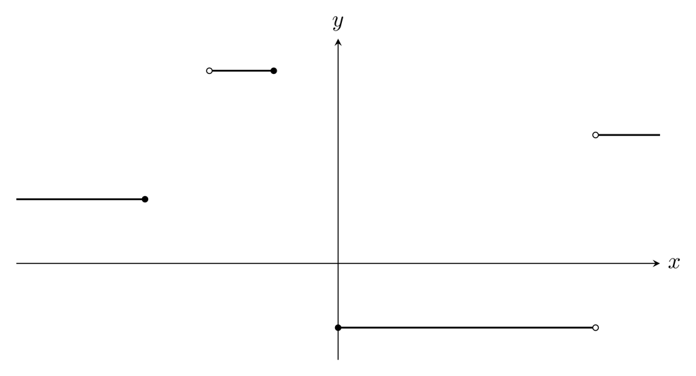

積分定数とは何か
本記事は、積分定数とは何かについて概ね私見で述べたものです。また、基本的に高校数学の範囲で理解できるように書いたつもりなので、厳密性が疎かになっている部分があるかもしれません。
前提
不定積分
微分して$f(x)$になる函数を$f(x)$の原始函数という。また、$f(x)$の原始函数全体を$f(x)$の不定積分といい、$\displaystyle\int f(x)dx$と表記する。
「全体」とは？
函数$f(x)$および函数からなる集合$X$に対し、
\begin{align*}
f(x)+X&=\{f(x)+g(x)\mid g(x)\in X\}\\
f(x)-X&=\{f(x)-g(x)\mid g(x)\in X\}\\
f(x)X&=\{f(x)g(x)\mid g(x)\in X\}\\
\end{align*}
と定める。また、函数からなる集合$X,Y$に対し、
\begin{align*}
X+Y&=\{f(x)+g(x)\mid f(x)\in X,\,g(x)\in Y\}\\
X-Y&=\{f(x)-g(x)\mid f(x)\in X,\,g(x)\in Y\}\\
\end{align*}
と定める。
具体例
「公式」は本当に正しいか
実数全体で定義された函数$f(x),F(x)$が$f(x)=F'(x)$を満たすとする。このとき$f(x)$の原始函数は、定数$c$を用いて$F(x)+c$と表せる。
積分定数は定数ではない？
$D$を実数全体の集合の部分集合とし、$D$を定義域とする函数$f(x),F(x)$が$f(x)=F'(x)$を満たすとする。このとき
$$\int f(x)dx=F(x)+C(D)$$
ただし、$C(D)$は$D$上の局所定数函数全体の集合である。
局所定数函数
$D$を実数全体の集合の部分集合とする。$D$を定義域とする函数$f(x)$が局所定数函数であるとは、
$$I=\{x\mid a\leqq x\leqq b\}\subset D$$
の形の任意の区間$I$に対して$f(x)$が$I$上定数函数となることをいう。
局所定数函数
(定理2)